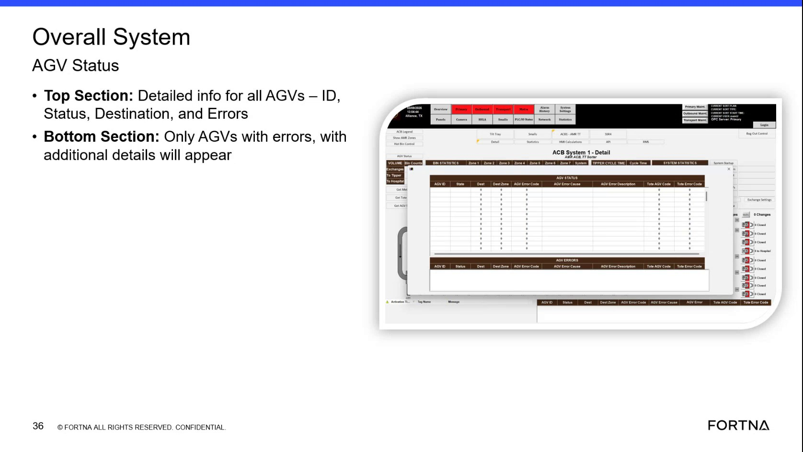

| Procedure ID | proc_check_overall_system_agv_status_popup_agv_destination_errors_v1 |
|---|---|
| Title | Check Overall System AGV Status popup for AGVs with destination errors |
| Procedure Type | diagnostic |
| Primary Role | L1_support |
| Support Safe | Yes |
| Capability Tags | agv_active_errors |
| Access Surface | rms_ui |
| Audience Roles | L1_support |
| Failure Pattern Tags | None |
| Validation Status | needs_sme_review |
| Merge Status | source_finalized |
Use the live RMS / fleet status UI popup titled “Overall System AGV Status” to identify which AGVs currently have errors and review their Destination and Errors details. The popup shows a top section for all AGVs and a bottom section filtered to only AGVs with errors.
When you need to quickly determine which AGVs have active errors related to destination/error conditions and view their Destination and Errors details in the RMS fleet status UI.

Responsible role: L1_support
Instruction:
In the RMS / fleet status UI (rms_ui), navigate to the popup/screen titled “Overall System AGV Status”.
Expected result:
The “Overall System AGV Status” popup is displayed.
Responsible role: L1_support
Instruction:
In the “Overall System AGV Status” popup, check the top section table/list to confirm it includes fields/columns for ID, Status, Destination, and Errors.
Expected result:
The top section displays the fields/columns “ID”, “Status”, “Destination”, and “Errors”.
Stop or Escalate If:
Responsible role: L1_support
Instruction:
In the “Overall System AGV Status” popup, check the bottom section to confirm it lists only AGVs with errors and includes additional error/destination detail for those AGVs.
Expected result:
The bottom section lists only AGVs with errors (error cases) and shows additional detail for those error AGVs.
Stop or Escalate If:
Responsible role: L1_support
Instruction:
For each AGV listed in the bottom (error-only) section, record/verify the AGV ID and the associated Destination and Errors details displayed in the popup.
Expected result:
You have a list of AGV IDs from the bottom section along with their displayed Destination and Errors values.
Responsible role: L1_support
Instruction:
If the popup does not show the expected “Overall System AGV Status” title/fields (ID, Status, Destination, Errors) or if the bottom section does not correctly show only AGVs with errors, stop and escalate.
Expected result:
Escalation is initiated when UI evidence is inconsistent with expected fields or filtering behavior.
Stop or Escalate If: